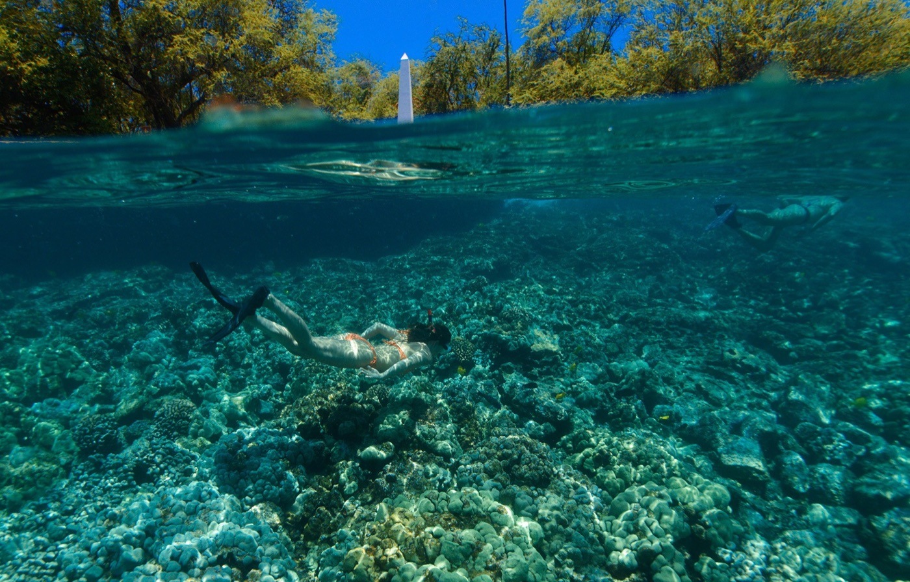
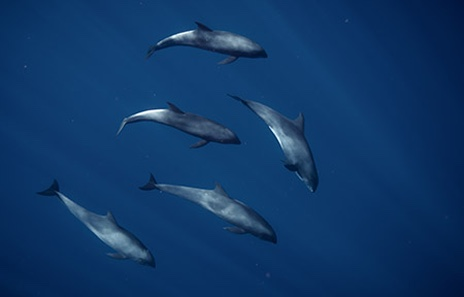
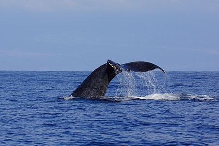
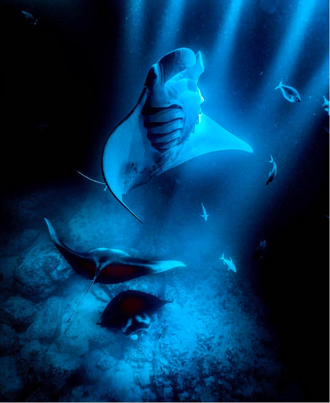

Captain Cook Snorkel Tour
Snorkel the crystal-clear waters of Kealakekua Bay — one of Hawaii's most protected and celebrated marine preserves.
Wild Hawaii Ocean Adventures
Explore pristine reefs, encounter incredible marine life, and experience the natural beauty of Hawaii's coastline through expertly guided ocean tours built for unforgettable moments.
Choose Your Experience

Snorkel the crystal-clear waters of Kealakekua Bay — one of Hawaii's most protected and celebrated marine preserves.

Cruise the Kona coast in search of dolphins, turtles, and whales, then snorkel secluded coves and protected bays.

Float under the stars as giant manta rays glide inches away in one of Hawaii's most unforgettable ocean encounters.

Head past the reef line into the deep blue to snorkel alongside pelagic species in Kona's open offshore waters.

Reserve the whole boat. Birthdays, honeymoons, photo shoots, or celebrations — custom-curated to your event.

From December to March, listen for humpback song through a hydrophone and watch these giants up close.

Our Story
We are uniquely capable of providing an ocean experience like no other company in Kona. We do this through a combination of our equipment and our talented crew.
Our boats are built to safely reach the best spots, and our guides are seasoned naturalists, expert freedivers, professional photographers, and experienced captains — most with decades on these waters. We keep our groups small so every guest gets a real, unhurried encounter with the ocean.
View ToursFrom Our Waters
What People Say
Answers Before You Even Ask
Wild Hawaii Ocean Adventures
Discover Kona's vibrant reefs, encounter incredible marine life, and experience the ocean in a way that stays with you long after the adventure ends. Book your tour today — limited spots daily.
Book A Tour
{kind=link}
{kind=link}
{kind=link}
{kind=link}
{kind=link}
{kind=link}
{kind=link}